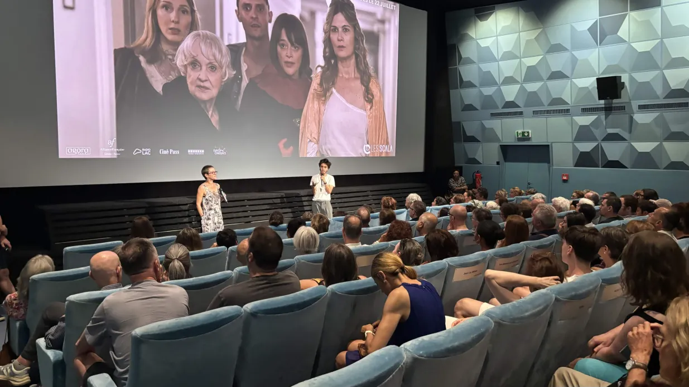

Avant-première du film De la Comédie-Française au cinéma Les Scala : retour sur une soirée mémorable
Le 17 juillet dernier, l’Alliance Française de Genève a eu le plaisir d’accueillir son public au cinéma Les Scala, institution […]
Lire l’article →